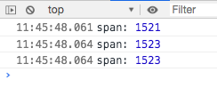
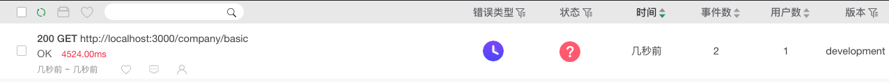
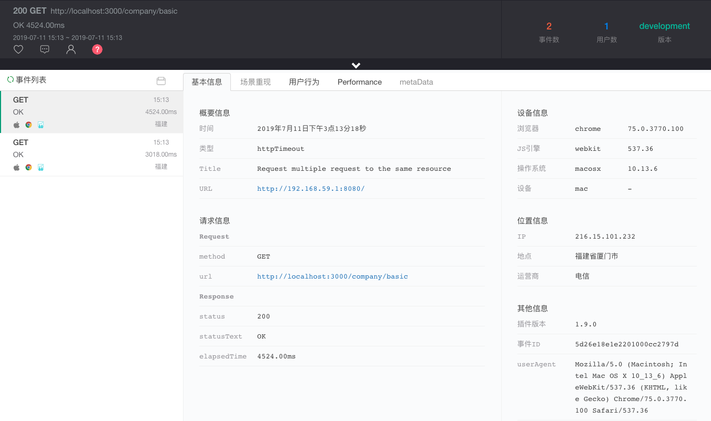
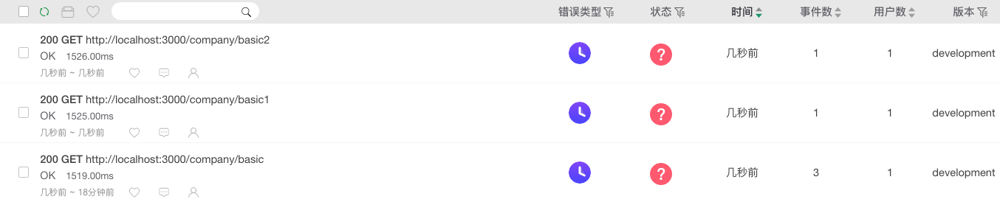
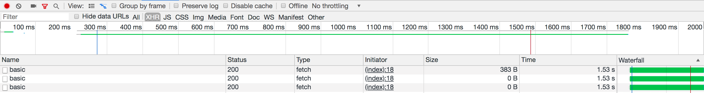
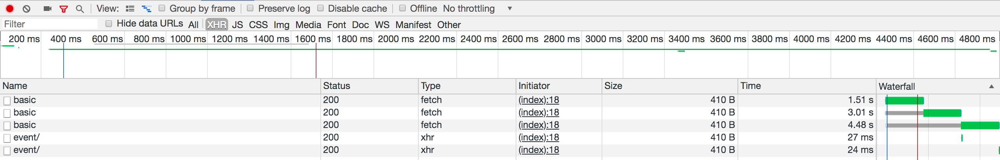
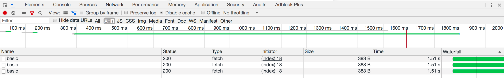

原文连接:https://www.cnblogs.com/fundebug/p/chrome-stall-multiple-same-request.html
最近在研究慢请求监控的问题，写了一个简单的测试代码：在网页端(index.html)通过fetch函数向服务端获取数据，然后打印请求耗时。
function requestData() {
let start = new Date();
fetch("http://localhost:3000/company/basic")
.then(res => {
return res.json();
})
.then(res => {
let span = new Date() - start;
console.log("span:", span);
});
}
requestData();在服务端通过setTimeout延时1500s才返回数据(服务端使用ExpressJS)。
app.get("/company/basic", (req, res) => {
setTimeout(function() {
res.send({ hello: "Hello Fundebug!" });
}, 1500);
});不出所料，span数据都略微大于 1500。
而后，我突发奇想，假设我同时发送多个请求会怎么样呢？于是有了如下代码：
[1, 2, 3].forEach(function() {
requestData();
});结果好像也没问题，在 Chrome 浏览器下面是这个效果：

接入 Fundebug 慢请求监控测试
于是愉快地接入 Fundebug 监控：
<script
src="https://js.fundebug.cn/fundebug.1.9.0.min.js"
apikey="API-KEY"
></script>并设置如果请求时长超过 2 秒就上报：
if ("fundebug" in window) {
fundebug.httpTimeout = 2000;
}本以为刷新页面，应该不会收到报错。
结果，万万没想到的是，Fundebug 收到 2 个慢请求报错。

这不科学啊！
点开错误详情，可以看到具体的报错信息。一个请求耗时 3018 毫秒，一个请求耗时 4525 毫秒。

也就是说，第一个请求没问题，假设是 1500 毫秒。我们把三个请求的时间放一起看看有何规律：1500，3018，4524。他们近似成等差数列，相差 1500 毫秒。于是，我怀疑三个请求是一个一个阻塞式的，而不是并发的。
测试并发请求不同 API 的情况
为了验证这一点，我将测试改为请求三个不同的 API 接口。
服务端代码：
app.get("/company/basic", resp);
app.get("/company/basic1", resp);
app.get("/company/basic2", resp);
function resp(req, res) {
setTimeout(function() {
res.send({ hello: "Hello Fundebug!" });
}, 1500);
}网页端代码(requestData函数传入请求的 URL)：
[
"http://localhost:3000/company/basic",
"http://localhost:3000/company/basic1",
"http://localhost:3000/company/basic2"
].forEach(function(item) {
requestData(item);
});为了获取请求数据，将httpTimeout改为 1500。
if ("fundebug" in window) {
fundebug.httpTimeout = 1500;
}Fundebug 捕获三个请求的时间，分别为 1526，1525，1529。

至此大体验证了刚刚的假设：对同一个 API 接口的并发请求会被阻塞，对不同的 API 接口并发请求正常执行。
那么为什么会被阻塞呢？意图何在？接下来慢慢给各位介绍。
背后的原因
在StackOverflow上找到了答案:
Yes, this behavior is due to Chrome locking the cache and waiting to see the result of one request before requesting the same resource again. The answer is to find a way to make the requests unique.
也就是说，Chrome 特意做了这样的设计。对于连续的相同请求，Chrome 会阻塞后面的请求，直到前面的完成。通过判断前面的请求返回的 Header 里面的缓存设置来决定下一步的行动。
我们可以做个实验来验证一下。
缓存实验
服务端设置缓存 2 秒
在服务端的接口返回代码中配置缓存时间
res.setHeader("Cache-Control", "public, max-age=2");
服务端设置不缓存
res.setHeader( "Cache-Control", "private, no-cache, no-store, must-revalidate" );
Chrome 开发者面板设置
Disable Cache
最后的疑问
为什么打开和不打开谷歌开发者控制台，行为会不一样了？
其实是有原因的，而且这个干扰项一度成功阻止了我发现问题的本质。当我们在开发前端项目的时候，代码的改动希望能够实时地反应到网页上，而不是受到浏览器缓存的影响，但是我们发现往往刷新页面的时候没有真的去服务端获取数据，还是老的信息。于是，我们会去配置一个选项，将Disable Cache设置为true。也就是说，在开发环境下，缓存是被禁用了的，也就不存在等待第一个请求返回然后判断其 Header 里面Cache-Control设置的问题。这也是为什么打开谷歌开发者控制台，请求没有等待，立即执行了。
关于Fundebug
Fundebug专注于JavaScript、微信小程序、微信小游戏、支付宝小程序、React Native、Node.js和Java线上应用实时BUG监控。 自从2016年双十一正式上线，Fundebug累计处理了10亿+错误事件，付费客户有阳光保险、核桃编程、荔枝FM、掌门1对1、微脉、青团社等众多品牌企业。欢迎大家免费试用！

版权声明
转载时请注明作者 Fundebug以及本文地址：
https://blog.fundebug.com/2019/07/17/chrome-stall-multiple-same-request/